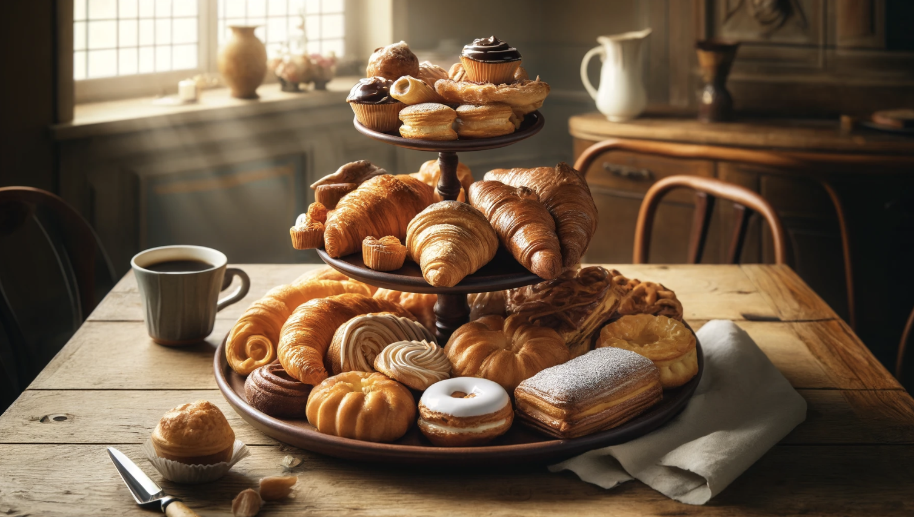
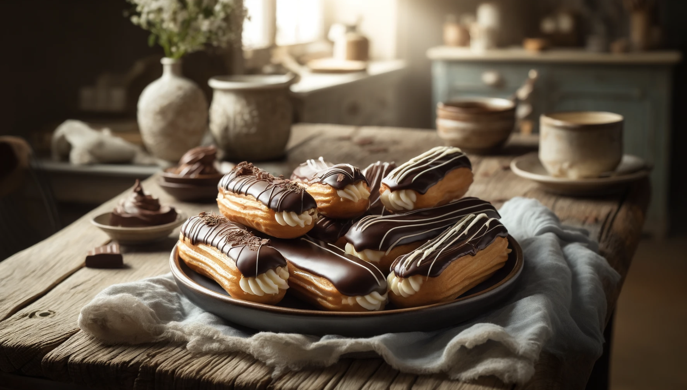

Delicious Three-Tiered Pastries

Discover the art of baking with our step-by-step guide to creating these beautiful three-tiered pastries. Perfect for any occasion, these treats are sure to impress your guests!
Recipe:
- 1. Preheat your oven to 375°F (190°C).
- 2. Prepare the dough and roll it out.
- 3. Cut the dough into desired shapes and sizes.
- 4. Layer pastries on the tiered stand.
- 5. Brush with egg wash for a golden finish.
- 6. Bake for 15-20 minutes or until golden brown.
- 7. Let them cool and dust with powdered sugar.
Classic Croissants
Learn how to make classic, buttery croissants with our detailed recipe. Perfect for breakfast or a snack, these croissants are flaky and delicious.
Recipe:
- 1. Mix flour, sugar, salt, and yeast in a bowl.
- 2. Add butter and milk, and knead the dough.
- 3. Let the dough rise for 1 hour.
- 4. Roll out the dough and fold it several times to create layers.
- 5. Cut the dough into triangles and roll into croissant shapes.
- 6. Let the croissants rise for another 1 hour.
- 7. Preheat the oven to 375°F (190°C) and bake for 20-25 minutes.
Chocolate Eclairs

Indulge in these rich and creamy chocolate eclairs. Our recipe guides you through the process of making these decadent pastries from scratch.
Recipe:
- 1. Preheat your oven to 400°F (200°C).
- 2. Prepare the choux pastry dough and pipe into eclair shapes.
- 3. Bake for 15-20 minutes or until puffed and golden.
- 4. Prepare the cream filling and chocolate glaze.
- 5. Once eclairs are cool, fill them with cream and dip in chocolate glaze.
- 6. Refrigerate until the glaze is set.